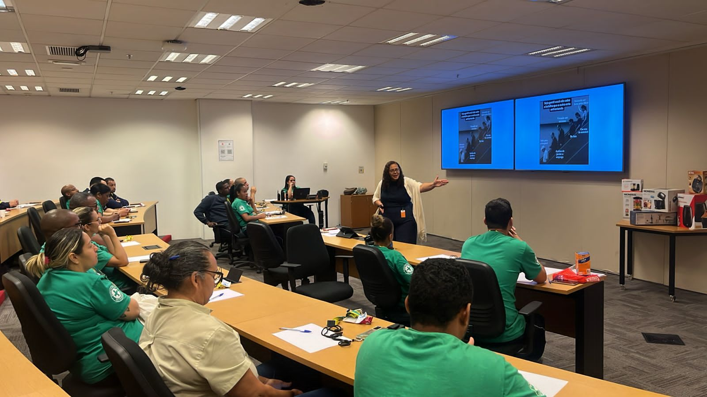

Um espaço seguro para você se reconectar consigo mesmo.
Ofereço atendimento psicológico presencial e online com escuta ativa, acolhimento e compromisso com o seu bem-estar. Juntos, podemos atravessar os momentos difíceis e construir caminhos mais leves.
Sobre mim
Olá! Sou Priscila Rocha, psicóloga formada pela UNIABEU, com mais de 9 anos de experiência em atendimento clínico e empresarial. Minha prática é fundamentada na Gestalt-Terapia, na Neuropsicopedagogia, na Docência e na Perícia, buscando sempre um espaço integrativo com intervenções personalizadas para cada pessoa e tema.
Acredito que cada indivíduo carrega consigo uma história única e merece ser ouvido com respeito, empatia e sem julgamentos. Meu objetivo é criar um espaço de confiança onde você possa se expressar livremente e encontrar seu próprio caminho para o bem-estar emocional.
Serviços
Ofereço atendimento personalizado para diferentes momentos e necessidades da vida. Cada processo é único, construído com você ao seu ritmo.
Sessões via videochamada segura, com a mesma qualidade do atendimento presencial. Ideal para quem tem uma agenda corrida, mora longe, em outros Estados e Países ou prefere o conforto de casa.
Saiba mais →Sessões no meu consultório em Rio de Janeiro, em ambientes acolhedores, confortáveis e totalmente reservados para garantir sua privacidade e bem-estar.
Saiba mais →Emocionais, comportamentais, familiares, profissionais, sistêmicas, Educacionais e etc. Alguns exemplos: Ansiedade e depressão, estresse, relacionamentos, autoestima, autoconhecimento, luto, traumas e manutenção da qualidade de vida.
Ver todas →Entre em contato pelo WhatsApp ou formulário para agendar sua consulta.
Conversamos sobre o que te trouxe até aqui, sem pressão e sem julgamentos.
Juntos definiremos objetivos e a melhor intervenção terapêutica para o seu caso.
Sessões semanais para avanços consistentes e duradouros na sua vida.
Por que iniciar a Psicoterapia
Meu compromisso é com sua transformação real. Cada sessão e palestra é pensada para oferecer uma experiência acolhedora e significativa.
Você é recebido com empatia, respeito e escuta ativa. Aqui não existem respostas prontas — apenas uma presença comprometida com o seu processo.
Tudo o que é compartilhado permanece seguro. Trabalho seguindo rigorosamente o Código de Ética do CFP.
Atendo em horários variados, incluindo eventuais disponibilidade aos finais de semana por plantão psicológico.
Não existe psicoterapia padronizada. Cada processo é único e construído a partir das suas necessidades, história e objetivos.
Atuação Profissional
Com formação sólida e atuação em múltiplas frentes, combino a experiência clínica, acadêmica e institucional para oferecer uma contribuição ampla e consistente à saúde mental individual, de grupos empresariais e comunitários, sempre pensando no desatar do desenvolvimento humano.

Comunicação & Educação
Realizo palestras em eventos, instituições e empresas, levando conteúdo qualificado sobre saúde mental, desenvolvimento humano, bem-estar e temas educacionais de forma acessível e impactante.
Formação & Ensino
Buscando formação contínua e Pós-Graduação em Docência em Psicologia, Educação, Filosofia e Teologia, possuo experiência em ensino e formação de alunos, unindo rigor acadêmico a uma abordagem humana e comprometida com a disseminação do conhecimento.
Direito & Ciência
Especializada em Perícia Judicial, atuo na interface entre a Psicologia e o Direito, elaborando laudos e pareceres técnicos com base em metodologia científica rigorosa, ética profissional e imparcialidade. Uma atuação que exige precisão, responsabilidade e profundo conhecimento técnico.
"O conhecimento se transforma em cuidado
quando é compartilhado com ética e humanidade."
Contato
Entrar em contato é o primeiro passo. Estou aqui para entender como posso ajudar você.
Preencha o formulário e entrarei em contato o mais breve possível.
Obrigada pelo contato. Responderei em breve pelo e-mail ou WhatsApp informado.